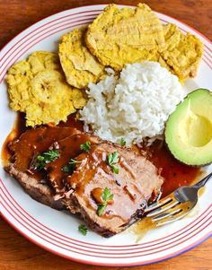

Posta Cartagenera

La posta cartagenera es uno de los platos más emblemáticos
de la gastronomía de Cartagena de Indias, Colombia.
Consiste en un corte de carne de res (tradicionalmente muchacho o capón)
que se marina y se cocina lentamente en una salsa oscura, espesa, dulce y sabrosa.
Su característico toque dulzón se logra caramelizando la carne con panela
(o azúcar morena) y Coca-Cola, combinada con cebolla, ajo y salsa negra.
Ingredientes
- Posta
- 1 Zanahoria
- Cilantro
- Perejil
- 1 Puerro
- Pimenton (1 Pequeño)
- Cerveza (1 lata)
- Pasta de Tomate/li>
- Panela 1/4
- Tomillo
- Mostaza
- Sal
- Pimienta
Preparacion
-
Sellar
Lo primere que se hace es sellar la posta con sal
y pimienta hasta que quede dorada -
Coser
Echar la posta a la olla de presion, junto con los
jugos que solto cunado se sello -
Incorporar lo demas
Luego incorporar la serveza y los demas ingredientes
hasta que quede cubierta todas la carne
se pita entre 45/50 minutos